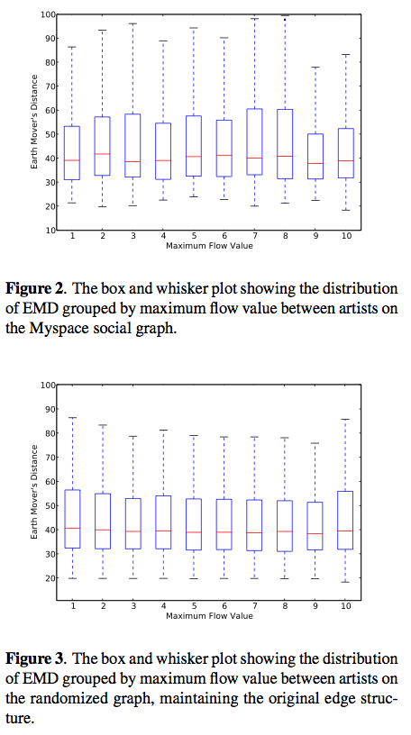
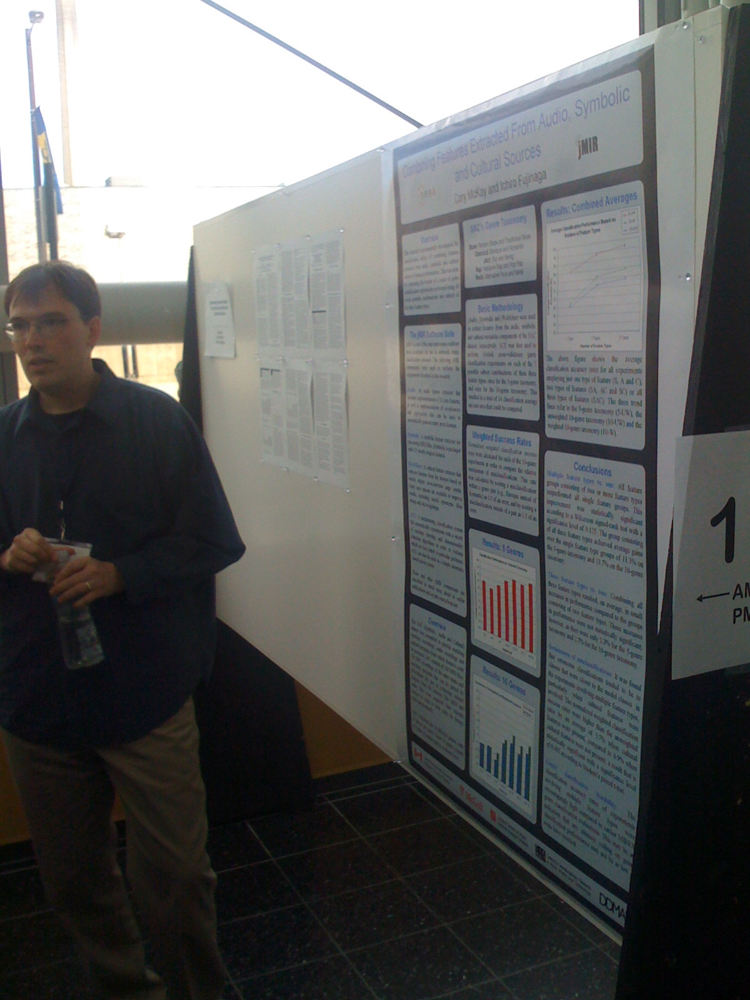
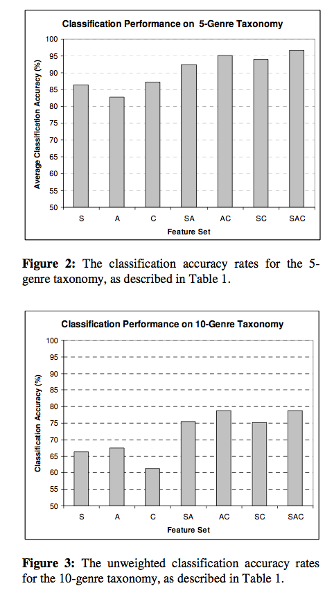

ISMIR Day 3 - Content based similarity and retrieval
Social Playlists and Bottleneck Measurements : Exploiting Musician Social Graphs Using Content-Based Dissimilarity and Pairwise Maximum Flow Values
Ben Fields, Kurt Jacobson, Christophe Rhodes and Michael CaseyBen Field (dressed to kill) talks about his interesting work in looking at acoustic similarity and social networks. Motivation: There's a glass ceiling for content-based classification. Novelty: Don't always want 'similar' music. Novelty is important. Social/cultural awareness . Can we improve recommendations and playlist by incorporating social context and not just acoustic similarity.
Ben conducted a flow analysis of myspace artists, looking for nodes. How: Start with a randomly selected myspace artist, grab their 'top friends' (near neighbors in the graph) and repeat. Do this 6 times - yields > 15,000 artist and 60K tracks. 120K directed edges - 15.5 edges per node. Ben showed that this graph follows the Duncan watts power law.
So what do you do? - group artists based on maximum flow and compared with acoustic similarity. Not too surprisingly, these spaces are not well correlated. (These plots compare the Earth Mover's distance, vs. maximum flow value).
What can we do with this? - Look at meaningful ways to exploit this difference in acoustic and graph similarity. A playlist generator could be created by following maxflow paths through a social graph, where the cost of the paths are determined by acoustic similarity. This is a neat idea.

Music Genre Classification: A Multilinear Approach
Ioannis Panagakis, Emmanouil Benetos and Constantine KotropoulosThis team is looking at automatic genre classification using a bio-inspired cortical representation of the slow multi-scale spectro- temporal modulations of each recording is used. The author described in great detail their novel method for approaching genre classification using cortical Representation with wavelet analysis and tensors. Most of what he talked about was beyond me. He does seem to be bringing a new toolkit from bioinformatics to apply to music, with interesting results. This talk has the most equations per slide of ISMIR so far (50 times more equations then in Malcolm's talk).
Results: about 80% accuracy - which corresponds to at or near the state-of-the-art for genre classification.

Combining Features Extracted From Audio, Symbolic and Cultural Sources
Cory McKay and Ichiro Fujinaga
Cory describes their investigations of the classification utility of combining features extracted from separate audio, symbolic and cultural sources of musical information. Again, this is a genre classification experiment.
Can you improve classification performance by combining features. Also cory looks at the types of classification errors. Will this help us break through the glass ceiling?
They extracted the 3 types of features and compared classification of all 7 subsets. They created a new dataset: the SAC Dataset - Symbolic Audio Cultural. SAC has 10 genres of music, that can be collapsed into 5 genres. Use the jMIR toolkit for analysis.
Results: When combining all 3 features, classification accuracy improved. However the improvements of 3 types over 2 is not statistically significant. Looking at misclassifications - they used a misclassification cost function that reduces the penalty for misclassifying to a similar genre. When using these weighted rates and cultural features are used, the misclassifications tend to be in related genres. Results for a 10 genre taxonomy: 78.8% vs. the 68% results from last year - indicating that combining the feature types helps break through the glass ceiling. Next: The want to use a larger dataset with a larger class ontology.
Montreal Genre Classification Smackdown - Doug Eck doubts that the symbolic features are really necessary, but Cory thinks that they are.
This was a very clear presentation. Well done, Cory.
